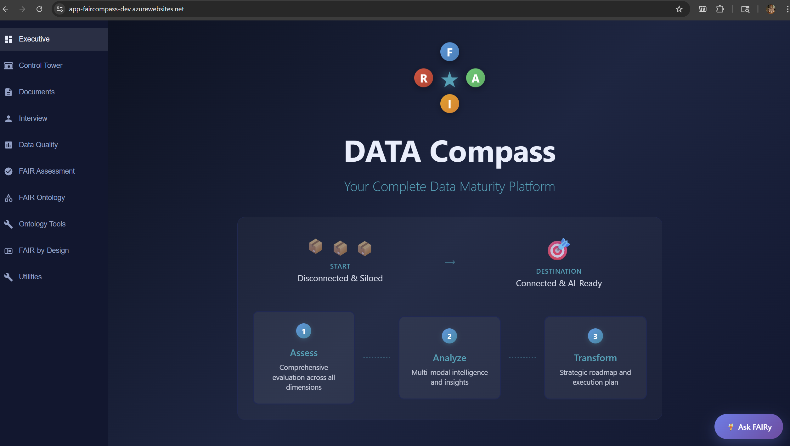
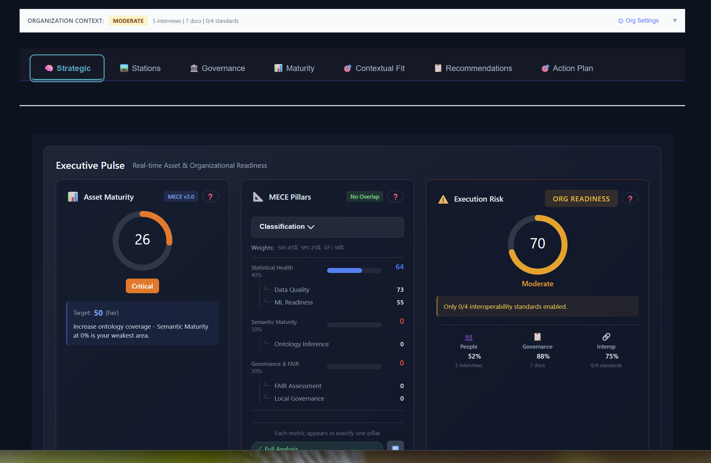
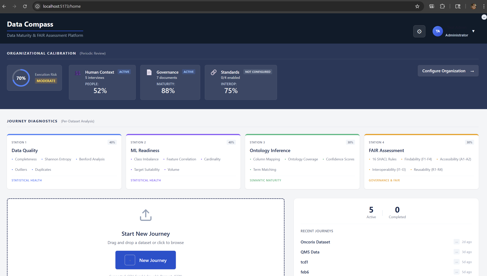
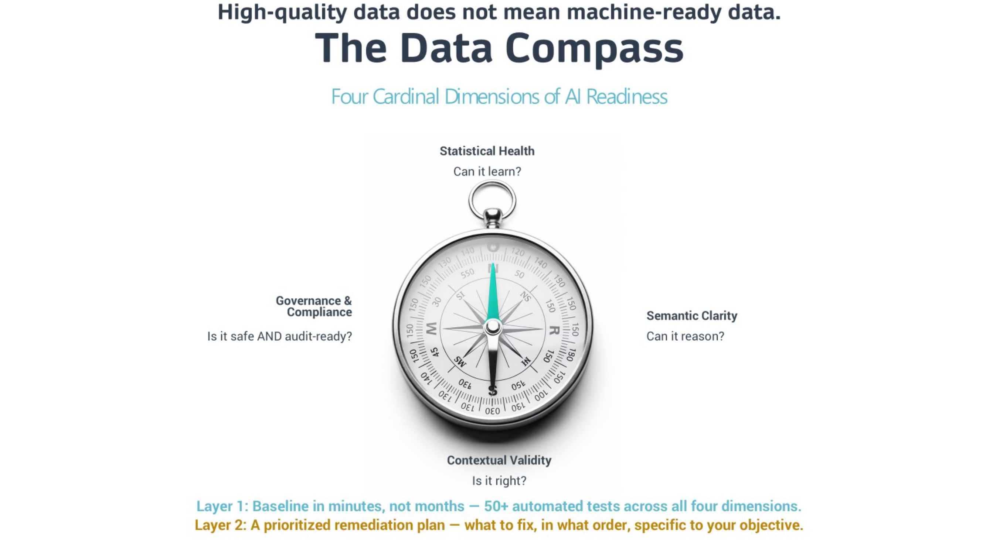
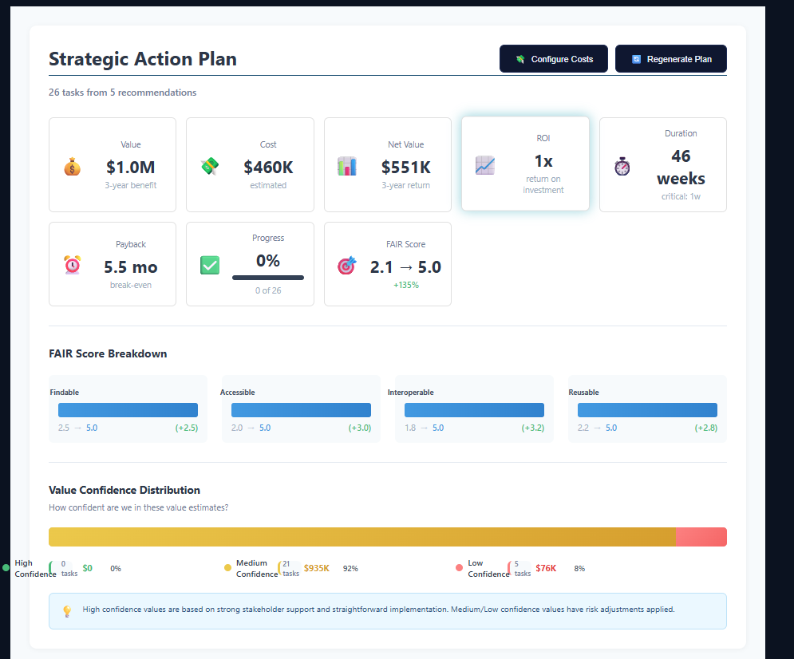
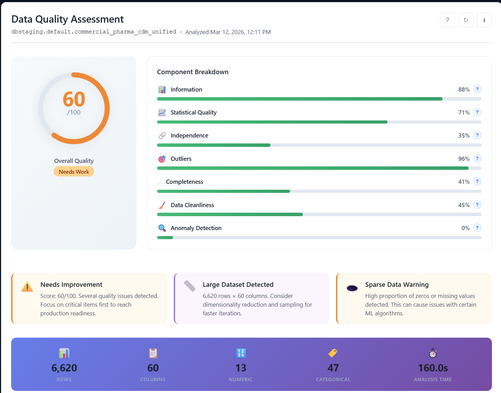
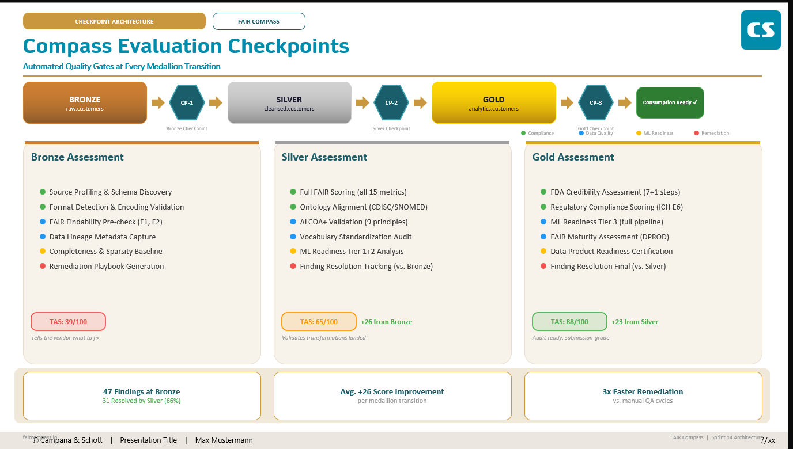

Protect your AI investment. A deterministic readiness score across statistical health, FAIR compliance, ML fitness, and governance — so you build on data you can trust, not data you have to fix later.

Upload a file or connect to Databricks, Snowflake, Veeva, or Stardog. No data movement required — we assess in place.
Five stations run 50+ deterministic tests across statistical health, FAIR maturity, ML readiness, governance, and contextual validity.
Get a prioritized action plan with projected ROI, remediation scripts, and governance assignments — ready for your next sprint.
Every dataset is evaluated across statistical, semantic, and governance dimensions — producing a single, defensible readiness score.
50+ data quality tests from completeness and uniqueness to Benford's Law and class separability.
Ontology inference, controlled vocabulary detection, and SHACL validation for interoperability.
ALCOA+ validation, privacy compliance, and governance document lens for regulated industries.
AI-guided assessment that evaluates data fitness for your specific business objective and domain.
Every assessment is grounded in the FAIR data maturity framework — Findable, Accessible, Interoperable, Reusable — with machine-readable SHACL shapes enforcing structural and semantic constraints.
15 Pistoia Alliance indicators scored across all four FAIR pillars, producing a 0-36 maturity score with per-criterion remediation guidance.
16 W3C SHACL shapes auto-generated from your data, with OWL axiom analysis and controlled vocabulary detection for true semantic interoperability.
Export inferred ontologies as TTL, JSON-LD, OWL, or SHACL shapes. Vocabulary-aligned outputs ready for integration with enterprise data catalogs and knowledge graphs.
From C-suite visibility to analyst diagnostics — every stakeholder gets the view they need.
A single view of data health across your entire portfolio. See which datasets are AI-ready, which need remediation, and where to invest next — with projected ROI for every action.

Trace every dataset through five assessment stations — data quality, FAIR compliance, ML readiness, ontology inference, and contextual validity. Identify exactly where and why a dataset fails.

A three-tier analysis evaluates ML readiness from statistical profiling through bias detection to advanced metrics like class separability and Shapley value estimation.

Bridge AI synthesizes findings into prioritized, actionable remediation steps — with projected ROI, owner assignments, and governance RACI matrices built in.

Bridge AI synthesizes findings across all five stations — but every conclusion traces back to deterministic evidence. No black boxes, no hallucinated scores.

A Bronze-Silver-Gold checkpoint architecture validates quality, compliance, and fitness-for-purpose at each stage — data doesn't advance until it passes.

Native connectors for enterprise data platforms. Assess data in-place without extraction or movement.
Unity Catalog browser, SQL profiling, and MLflow model assessment via PAT or OAuth2.
Database and schema browser with SQL API profiling for warehouses and data shares.
QMS, CDMS, and RIM module adapters with OAuth2 SSO and Direct Data extraction.
SPARQL querying, ICV constraint validation, and reasoning-powered ontology analysis.
Drag-and-drop CSV, Excel, Parquet, and JSON files for instant quality assessment.
Programmatic access to all assessment capabilities for CI/CD and pipeline integration.
"Most platforms tell you what's wrong with your data. DATA Compass tells you what to do about it — and what it's worth."— VP of Data Engineering, Top-20 Pharma
Built for teams at